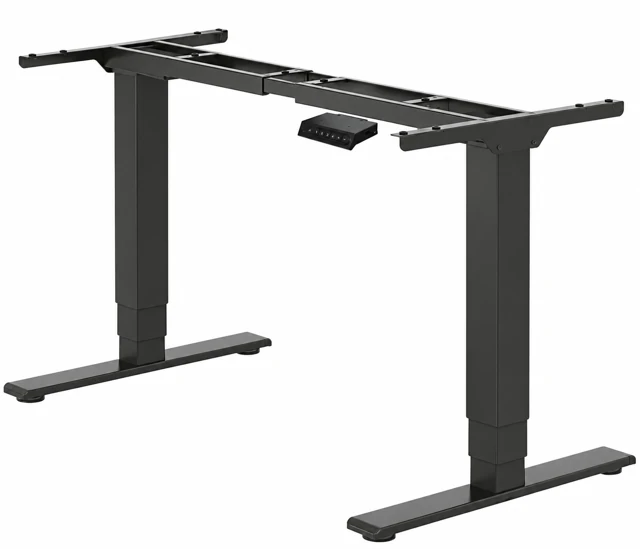
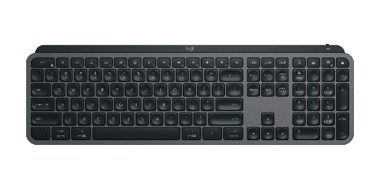
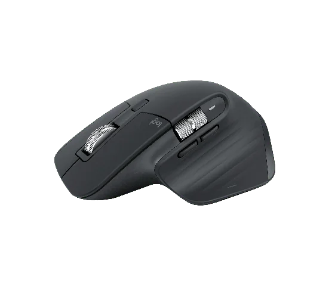
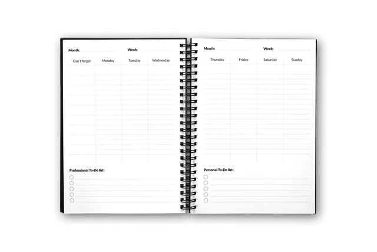
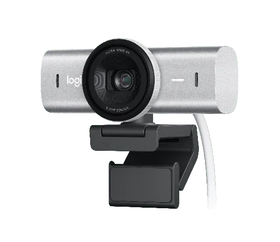
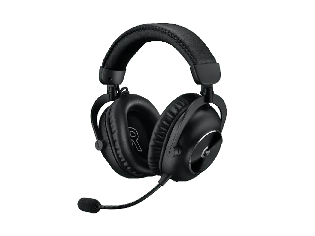
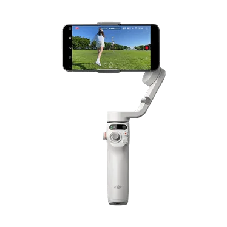
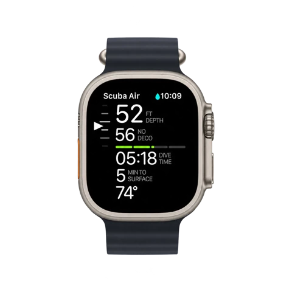
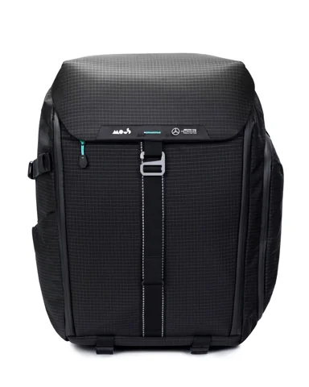

SETUP Y PRODUCTIVIDAD
Mi setup
Los equipos que forman parte de mi jornada, del escritorio a la mochila.
Busco la optimización y el alto rendimiento en lo que hago, y sigo el mismo criterio con mi equipamiento.
Antes de comprar cada equipo, investigué sus funciones, sopesé los pros y los contras, vi reseñas en YouTube y consideré las concesiones que implicaba cada opción. Quería entender si el precio más alto estaba justificado.

Escritorio

FLEXISPOT EC5 Plus Electric Dual (se abre en una pestaña nueva)
Con la FLEXISPOT puedo hacer reuniones y trabajar de pie en los momentos de concentración. Me gustan la calidad de los materiales y la potencia de sus dos motores. Los controles y las alturas predefinidas son muy útiles en mi día a día.

Logitech MX Keys (se abre en una pestaña nueva)
La disposición y la respuesta de las teclas hacen que escribir sea un placer. Uso el teclado numérico cuando trabajo con números y aprovecho mucho los atajos para abrir aplicaciones, bloquear el PC, hacer capturas de pantalla y cambiar entre escritorios virtuales.

Logitech MX Master 3S (se abre en una pestaña nueva)
Uso todos los botones del ratón para abrir programas y activar flujos de trabajo, y personalizo Actions Ring en Logi Options+ con atajos para distintas tareas. El desplazamiento horizontal marca la diferencia al navegar por hojas de cálculo de Excel y líneas de tiempo de vídeo.

Infinitebook Daily Goal Digger (se abre en una pestaña nueva)
Sigo prefiriendo el papel y el bolígrafo para tener las tareas y las prioridades a la vista. Antes usaba varios cuadernos y agendas: buscaba páginas, copiaba las tareas pendientes y dibujaba círculos, estrellas y asteriscos cuando cambiaban las prioridades. Investigué el reMarkable 2 y el iPad Pro, pero depender de una batería, la posibilidad de usarlos para otras cosas y el precio me hicieron descartar esas opciones.
Con Infinitebook puedo borrar y reorganizar mi día tantas veces como necesite. En los modelos que he usado, he tenido páginas para listas, notas con renglones y espacios en blanco para dibujar soluciones y arquitecturas. La idea de comprarlo una sola vez no se ha cumplido en mi caso: ya voy por el cuarto modelo, porque he ido descubriendo formatos distintos a medida que cambiaban mis necesidades.
Audio y vídeo

Logitech MX Brio (se abre en una pestaña nueva)
Durante años trabajé desde cualquier lugar con un MacBook de 13 pulgadas y sin equipos adicionales. Cuando empecé a usar un monitor externo, me fijé en cuántas personas aparecen de lado en las videollamadas, mirando hacia otro lugar mientras hablan.
Un curso de liderazgo y comunicación me hizo pensar también en la postura y el contacto visual en las reuniones a distancia. Compré una webcam básica y después pasé a la MX Brio 4K. Sus colores, el ajuste con poca luz y los controles de imagen marcan una gran diferencia en mi presencia en las reuniones online.

Logitech G PRO X 2 LIGHTSPEED (se abre en una pestaña nueva)
He tenido muchos equipos de audio en busca de buenos graves y de un sonido que me guste. Me llevó mucho tiempo encontrar unos auriculares que combinaran el sonido que quería para la música con un buen micrófono y un aspecto discreto para las reuniones ejecutivas. Los PRO X 2 me ofrecen esa combinación, con una aplicación para ajustar el sonido y los efectos.
Fuera del escritorio

DJI Osmo Mobile 6 (se abre en una pestaña nueva)
Estoy empezando a crear contenido y el Osmo facilita la grabación. Me ayuda a conseguir vídeos más estables, me permite apoyar el teléfono en el trípode y es fácil de transportar.

Apple Watch Ultra (se abre en una pestaña nueva)
Puedo no darme cuenta de una llamada cuando el teléfono vibra en el bolsillo. El Watch me ayuda a notarla, además de los avisos, alarmas y temporizadores que uso a lo largo del día. Todavía no he encontrado muchas apps o funciones específicas para smartwatch que me resulten útiles y bien diseñadas para un reloj.

Mous × Mercedes-AMG Backpack (se abre en una pestaña nueva)
Las visitas a clientes y los eventos implican muchos viajes, así que necesito una mochila discreta, con espacio para organizar y proteger mis equipos. He tenido modelos deportivos, los más nerds de Google Cloud y una Victorinox que fue mi favorita hasta que llegó al final de su vida después de muchas horas de vuelo. La Mous tiene el acabado y la distribución de compartimentos que busco para llevar mis equipos. Este no es el modelo UltraTex, pero tampoco tengo planes de lanzar la mochila desde un helicóptero.